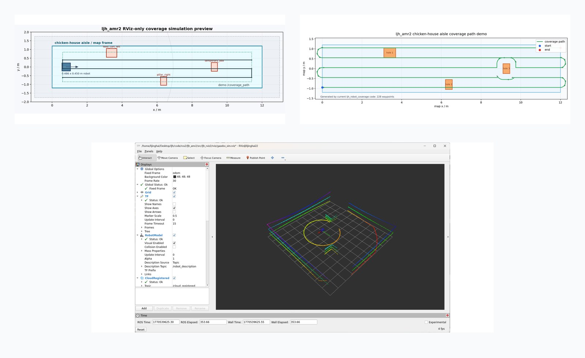
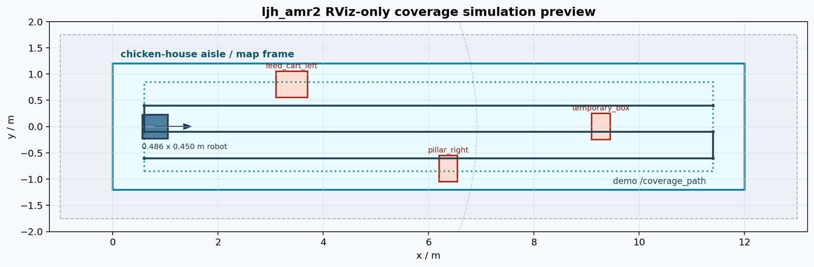
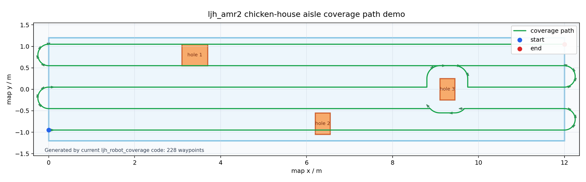
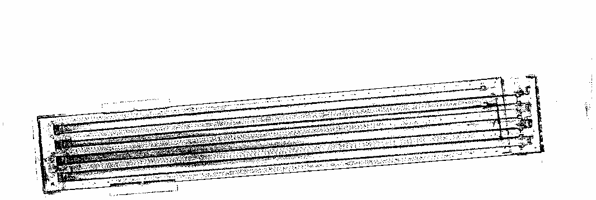
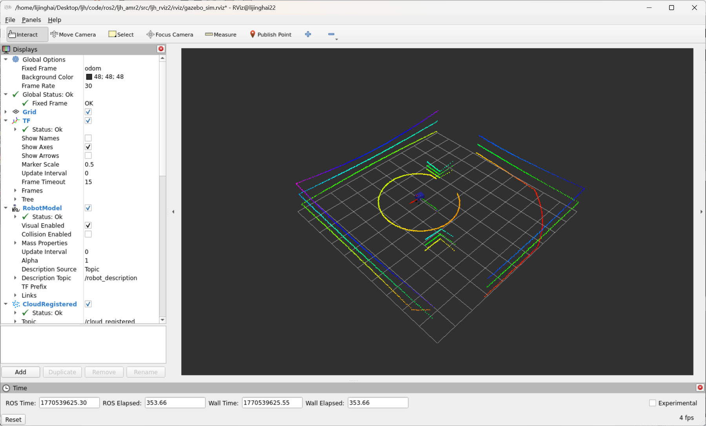
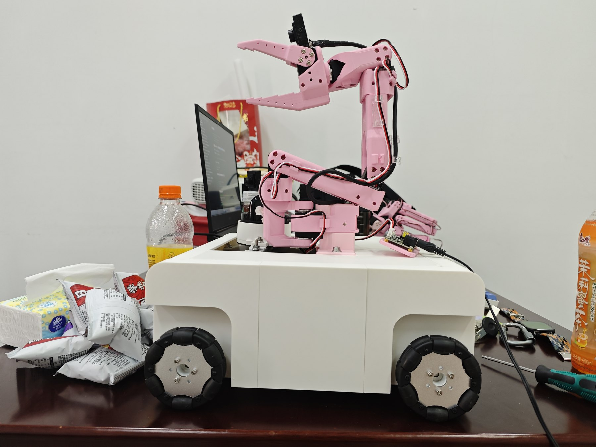

输入区域
RViz 鼠标拖矩形或点多边形，也可以直接调用 /coverage/compute_path 传 polygon 和 holes。
Map-aware Cleaning Coverage
AMR2 扫地机覆盖路径算法
这是一套面向清扫/覆盖任务的 ROS2 Humble 覆盖规划器：在 RViz 里用鼠标画矩形或多边形区域，算法结合真实 PCD 转出的 2D 地图、AMR2 车体 footprint、占据栅格障碍、安全边距和连通分块，生成可视化、可验证、后续可交给 Nav2 执行器的覆盖路径。

What It Does
Coverage Rect 拖拽矩形，也支持 Coverage Poly 点多边形和孔洞。/map，只在已知 free cells 内规划，unknown、off-map 和占据区不会被硬塞进路径。0.486 m x 0.450 m footprint 和安全边距膨胀障碍，路径发布前校验 waypoint 与连接段。nav_msgs/Path 和带 yaw 的 CoveragePath，能给 RViz 调试，也给后续 Nav2 覆盖执行器留接口。Verified Numbers
Algorithm Flow
RViz 鼠标拖矩形或点多边形，也可以直接调用 /coverage/compute_path 传 polygon 和 holes。
订阅 /map，把 PCD 2D 地图里的占据格、未知区域和地图外区域从覆盖区域中扣除。
按 AMR2 footprint、wall_margin 和 safety margin 处理边界，避免路径贴墙或穿过障碍。
sweep_angle=-1.0 时自动选择覆盖行数更少的方向，也能手动指定清扫方向。
遇到孔洞、凹多边形或多个 free component 时拆分区域，优先用安全圆弧/直连，必要时用 A* 连接。
发布 /coverage_path、带 yaw 的 /coverage/coverage_path，并显示 polygon/block markers。
Visual Evidence



ljh20260516.pcd 转出的 2D occupancy map。

ROS2 Interface
| 接口 | 类型 | 作用 |
|---|---|---|
/coverage/compute_path |
service | 直接传 polygon / holes 计算覆盖路径。 |
/coverage_path |
topic | 标准 nav_msgs/Path，供 RViz 和后续执行器复用。 |
/coverage/coverage_path |
topic | 自定义覆盖路径消息，每个 waypoint 带 x / y / yaw。 |
/coverage_sim/start_path_following |
service | 让 RViz-only fake car 沿当前覆盖路径行走。 |
README Snapshot
测试环境为 2026-07-26，Ubuntu 22.04 WSL，ROS2 Humble，分支 feature/coverage-path。README 中记录了消息、覆盖算法、RViz-only 仿真包编译通过，PCD 地图加载、/map + /scan + /coverage_path 话题就绪，clicked-point workflow、known-free clearance validator、follow test 和 odometry move test 均通过。
colcon build --symlink-install --packages-select ljh_robot_msg ljh_robot_coverage ljh_rviz2 ljh_robot_sim PASS
./run/check_ljh_sim_coverage_services.sh PASS
./run/check_ljh_sim_coverage_services.sh oversized map clip PASS, 128 waypoints
./run/check_ljh_sim_coverage_services.sh map clearance validator PASS, clearance=0.381m
./run/check_ljh_sim_coverage_services.sh follow test PASS
ros2 launch ljh_robot_sim ljh_amr2_rviz_sim.launch.py PASS这份页面只放关键链路；完整 README 和 PDF 快照保留在本站内，便于继续复盘。